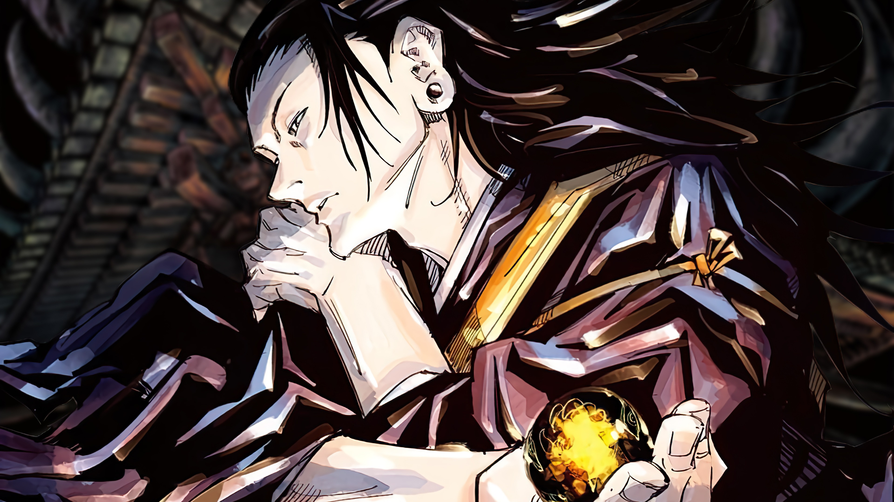
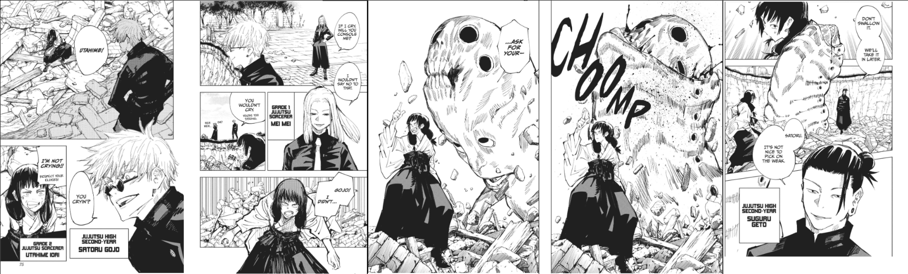
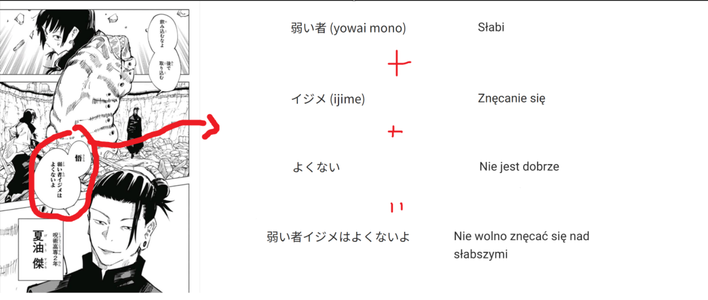
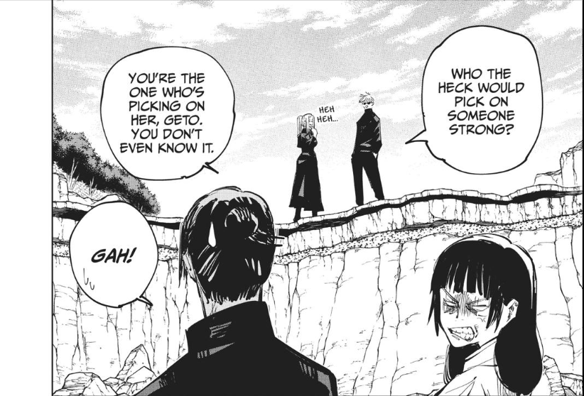
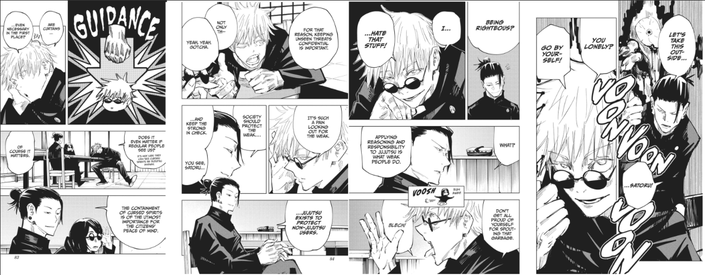
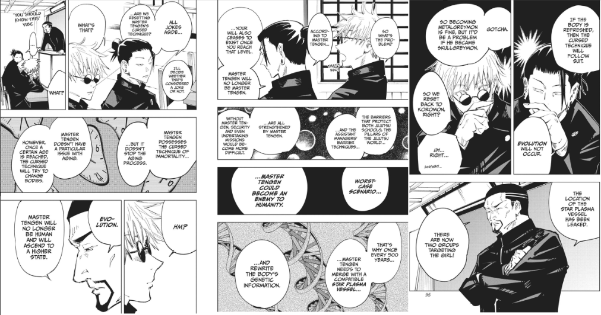

Przed rozpoczęciem czytania pragnę zaznaczyć, iż nie posiadam żadnego wykształcenia z dziedziny psychologii, filologii japońskiej ani niczego takiego, dlatego rzeczy zawarte w tym poście należy traktować jako coś czysto dla rozrywki i nie należy się sugerować, a nie daj Bóg powoływać się, na tę twóczość. Zapraszam do czytania. Jeżeli wiesz kim był Suguru Geto, pomiń wprowadzenie i przejdź do rozdziału pierwszego. Ostrzegam również, że nie przepadam za Geto, także post może być lekko nie obiektywny(ale z drugiej strony, kto jest obiektywny?)
Suguru Geto to antagonista JJK 0 oraz jeden z czarowników klasy specjalnej. Posiada technikę manipulacji przeklętymi duchami(która jest w topce jeżeli chodzi o potencjał jaki daje użytkownikowi). Poniósł śmierć z ręki, jeszcze wtedy nieoszlifowanego diamentu nowej ery, Yuty Okkotsu. Jego ciało zostało później przejęte przez Kenjaku.

Suguru Geto chodził do tej samej klasy co sam Satoru Gojo, a ich duet był uznawany za najsilniejszych. Co ciekawe, Geto nie pochodził z rodziny zaklinaczy a więc jego technika nie była dziedziczna a do samego technikum dostał się poprzez zwerbowanie(w przeciwieństwie do Gojo, który do technikum dostał się poprzez pochodzenie). Co ciekawe, pomimo, że jeszcze wtedy nie był zbrodniarzem, to już możemy zacząć ciekawą interpretację.

Warto się przy tej scenie zatrzymać, bo mamy tutaj dobrze pokazany duet jaki tworzą Gojo i Geto. Po tym jak Utahime wydostała się z pod gruzu, była narażona na atak przeklętego ducha. Gojo jednak, pomimo tego, że to on rozwalił budynek aby wydostać ją na zewnątrz, nie kiwa palcem aby ją uratować. Czy to dlatego, że jest bezdusznym skurczybykiem? To nie jest analiza o Gojo, dlatego wstrzymam się z tezą, jednak widać jakim zaufaniem Gojo darzy Geto. Wiedział on, że Suguru zadziała tak jak powinien - a dokładnie, tak jak powinno działać najsilniejsze duo. Zaobserwować tutaj możemy jak świetnie chłopaki się dopełniają. Działają praktycznie bez żadnych słów. Musimy się zatrzymać przy słowach Geto. Oficjalnie tłumaczenia polskie i angielskie się różnią, dlatego trzeba zajrzeć do źródła.

Skoro mamy już je przetłumaczone, przeanalizujmy je. Słowa Geto wskazują pewną rzecz. Nie broni on Utahime, tylko zasad("Nie wolno[...]"). Potwierdzają one opis Gojo względem Geto w JJK0, kiedy określa go idealistą. Geto w tym panelu próbuje powiedzieć jakgdyby "My jesteśmy wyżej więc zachowujmy się godnie". Według mnie mamy tutaj przykład czegoś co określa się mianem paternalizmu a nie np. empatii.

Reakcja Geto na słowa Mei Mei to według mnie coś więcej niż wstyd spowodowany błędem. Geto nie jest głupi, on doskonale zdaje sobie sprawę z tego co mówi. Jego reakcja to odpowiedź na to, że ktoś wyłapał tą samą opinie u Geto jak i Gojo. Geto stara się grać rolę modelowego ucznia(co będzie jeszcze rozwijane później). Mei Mei która konfrontuje go z niespójnością w jego wizerunku i zwraca na to uwagę uruchamia w Geto coś w rodzaju

Podczas tej wymiany zdań można zauważyć kilka ciekawych rzeczy. Pierwszą z nich jest motyw Geto który gra modelowego ucznia(jak wspomniałem wyżej), jego odpowiedzi brzmią tak jak jakiś tekst z podręcznika. Patrząć na Geto, widzę kogoś kto internalizuje(uwielbiam to słowo) system świata Jujutsu. Gojo natomiast mówi to co myśli, to co czuje. Jego wypowiedzi są autentyczne oraz zgodne z nim. Geto, czy zdaje sobie z tego sprawę czy nie, mówi to co powinien mówić a nie to co właściwie czuje. Dowodem na to jest to, że to Suguru inicjuje konflikt. Poczuł, że jego argumenty są zagrożone, że Gojo podkopuje fundament modelowego ucznia którym Geto stara się być, więc poszedł w coś w czym czuł się najpewniej, czyli walce (przypominam, że na tamtym etapie historii Gojo i Geto byli mniej więcej na równym poziomie).

Kolejny przykład modelowego ucznia jakiego chce grać Geto. A Gojo po raz kolejny jest tym kim czuje się być. Geto zaskoczony brakiem wiedzy Gojo tłumaczy wszystko(znowu jakby był podręcznikiem). Kiedy Gojo łączy zasadę ewolucji Tengena, z ewolucją w mandze Dimigon, Geto reaguje niechęcią. Warto zadać pytanie, czy to niechęć do mangi, czy może reakcja na Gojo który znowu myśli samodzielnie, nie tak jak chciałoby technikum.